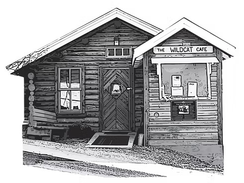

CLOSED for Folk on the Rocks back at it Wednesday, July 15th See you there!

Patio season is back, and we can't wait to welcome you, don't forget your sunglasses We're launching a brand new menu inspired by the flavors of the North, featuring local produce, fresh fish, and thoughtfully foraged ingredients. Chef Niki brings her signature flair to every dish, celebrating the best of the season. Join us for craft cocktails, a dog-friendly patio, and the warm, easygoing vibe of a northern summer. See you soon!